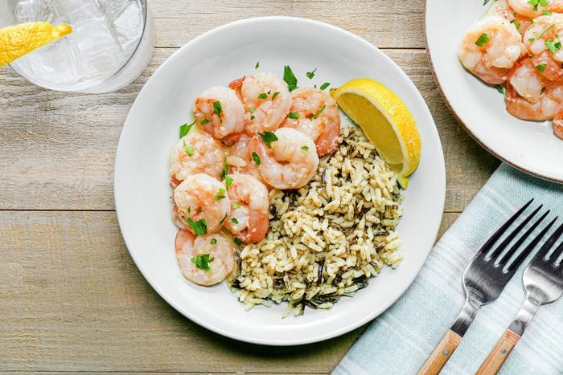
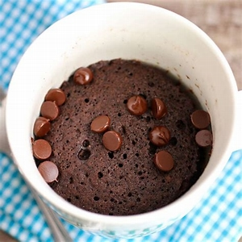

Garlic Butter Shrimp
How to make it :
This 25-minute recipe requires just four ingredients and one skillet. Cook the minced garlic and shrimp in butter until the shrimp are cooked through. Then, add the lemon juice. Seriously, that’s it.
The main thing you’ll want to avoid is overcooking the shrimp. Shrimp are one of the fastest-cooking proteins, and they’ll be finished in a mere five minutes. That time goes by fast, so make sure you have all the ingredients prepped and ready to go. Perfectly cooked shrimp are juicy, but overcooked shrimp become tough and rubbery.
ingredients :
- Shrimp
- Garlic
- butter
- lemon
Instruction :
- Saute the shrimp
- In a large skillet, saute the shrimp and garlic in butter for about five minutes until the shrimp turn pink.
- Finish with lemon juice
- Add Parmesan cheese: Make the shrimp even richer with a little shredded Parmesan cheese.
Include spice: Give the dish a spicy kick with crushed red pepper flakes or cayenne pepper. You can also make it into Cajun shrimp with some paprika, cayenne, nutmeg and thyme.
- Turn it into a pasta sauce: Add a little white wine or a splash of pasta cooking water to turn the butter-garlic mixture into a pasta sauce, similar to lemon-garlic shrimp pasta or shrimp tortellini.

Chocolate mug cake
How to make this cake ?
It couldn’t be easier to make a homemade mug cake: Combine the dry ingredients in a microwave-safe mug, stir in the wet ingredients, then cook in the microwave until the cake is done in the middle. You’ll find the full, step-by-step recipe below with detailed instructions.
Ingredients :
- flour
- sugar
- baking soda
- Cocoa powder
- salt
- milk
- vanila
- Oil
- water
Instruction
- To start, you’ll need at least a 12-ounce mug. I suggest spraying the mug with nonstick cooking spray or greasing it with some butter so the cake doesn’t stick.
- Then, you’ll whisk together the all-purpose flour, cocoa powder, granulated sugar, baking powder, and a tiny pinch of salt. Next, add the milk, oil, and vanilla extract and stir until just combined.
- Once you’ve mixed up the cake batter, you’ll pour it into your greased mug. At this point, you can add some chocolate chips for a chocolate chip mug cake. This step is optional, but I love them!
- you’ll want to microwave the cake until the center is just set. Mine is usually perfect right at 1 minute and 15 seconds, but the cooking time will vary slightly depending on the mug you use and your microwave.
- also suggest keeping an eye on the mug cake as it’s cooking and stopping the microwave as soon as the center looks done. I’ve found that even an extra 15 seconds in the microwave can lead to a cake that’s really dry.

Spicy roasted chickpeas
How to make spicy roasted chickpeas ?
They’re perfect for grabbing by the handful and shoveling them into your mouth or in place of traditional croutons on a salad.
They add a wonderful punch of flavor and texture.
This recipe is made in just over 30 minutes with a few pantry ingredients and only 3 steps.
It’s a quick and easy way to eat healthy when you’re craving something snackable.
The absolute best part: the spices I use here are just a start. With the basic outline on how to roast chickpeas, including the process, oven temperature, and cook time, you can feel free to experiment with flavors however you choose.
Ingredients :
- chickpeas
- spices
- Extra virgin olive oil
Instruction :
- Preheat oven to 425 degrees.
- Lay chickpeas out on a sheet pan and pat them dry with a kitchen towel. Remove the towel from the pan.
- Combine spices in a bowl. Sprinkle the spices over the chickpeas and drizzle them with the olive oil.
- Toss until the chickpeas are coated with spices.
- Place in an even layer on a baking sheet and bake 25-35 minutes, until crispy, stirring once about halfway through.
- Remove from the oven, set aside and allow to cool.
- Store the roasted chickpeas in an airtight container at room temperature up to 2 weeks.

stir Fried Tofu & Veggies
How to make it?
This healthy tofu stir fry has all the makings for a fast and easy vegetarian dinner. You can make the sauce and prep the vegetables and tofu ahead of time so that when it’s dinner time, you can quickly get a meal on the table.
Ingredients :
- Firm tofu
- Vegetable oil
- Soy sauce
- Garlic
- Vegetables
- Vegetables
- onion
- salt, pepper
Instruction :
- Combine the soy sauce, vegetable broth, and honey to make the sauce.
Cut the tofu into half-inch cubes and then put them in a large bowl. Season with soy sauce and then coat in cornstarch
Cook the tofu for a few minutes without moving it in a nonstick skillet or wok and then repeat on the other sides.
Remove the tofu from the skillet and then cook your veggies until they are soft.
Add the garlic and ginger and cook for about 30 seconds.
Put the tofu and sauce in the pan and cook for a couple of minutes.
- You can use any vegetables you like. I used broccolini and bell pepper, but broccoli, carrots, or snap peas would also work.
Rather use meat? Swap the tofu for shrimp or diced chicken.
Make the stir fry vegan by swapping the honey for maple or brown sugar.
Make a spicy tofu stir fry by adding sriracha to the sauce.
Serve the stir fry by itself or with rice or soba noodles, or if you want to keep it low-carb, use cauliflower rice or zucchini noodles.
Nutritional Info About each Recipe
| Dish | Calories | Protein | Carbs | Fat | Fiber |
| Garlic butter shrimp |
200 kcal |
25g |
2g |
10g |
0g |
| chocolate mug cake |
350 k cal |
5g |
45g |
18g |
2g |
| Spicy roasted chickpeas |
270 kcal |
12g |
30g |
10g |
8g |
| stir fried tofu & veggies |
300 kcal |
15g |
20g |
18g |
6g |
|
|